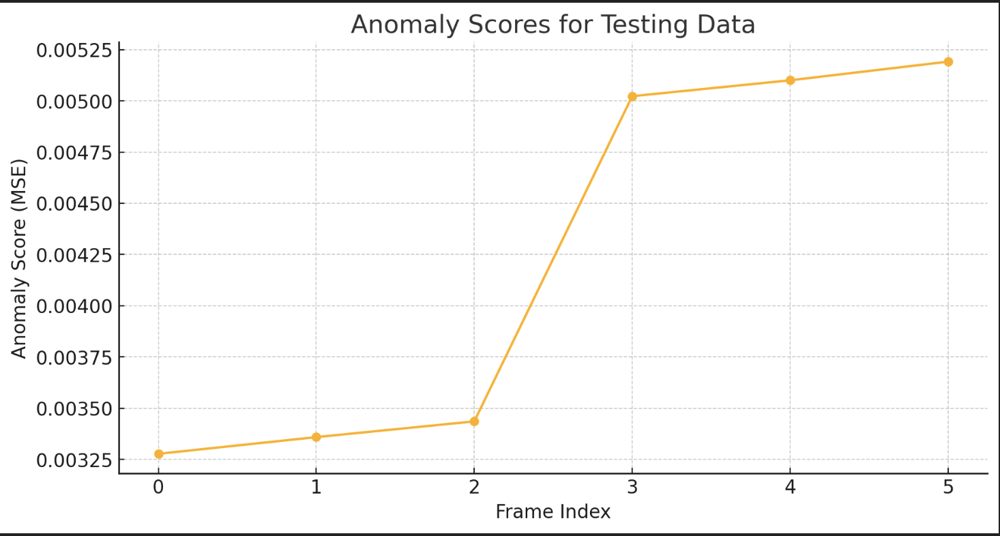

As urban areas continue to expand, the complexity of maintaining safety and security grows exponentially. Motivated by this challenge, we chose to focus our project on anomaly detection in video surveillance, a critical component of modern urban security systems. Our interest in this field stems from its potential to significantly enhance the efficiency of monitoring public spaces. Below, we provide a couple of examples from our dataset that illustrate the typical urban scenes we analyze.
We employed a convolutional autoencoder, a deep learning model renowned for its ability to learn efficient data codifications in an unsupervised manner. This model was meticulously trained on a diverse dataset of normal surveillance footage to capture common patterns and activities in urban settings. By reconstructing the input video frames, the model was designed to pinpoint deviations from these learned patterns during its evaluation phase.
Example output images showing the side-by-side comparison of the original and reconstructed frames to highlight the model’s reconstruction capability.
To assess the model's performance, we visualized the reconstruction errors, calculated as the mean squared error (MSE), across our test dataset. Frames with higher errors, which suggest potential anomalies, are flagged accordingly. Below is the plot that displays these errors over a sequence of test frames:
The analysis of MSE scores revealed that frames with abnormally high errors often correlated with unusual or unexpected activities, which were potential indicators of anomalies.
A notable observation was the model's sensitivity to varying lighting conditions, such as dynamic shadows, which were sometimes mistakenly identified as anomalies due to their significant visual difference from the norm.
The convolutional autoencoder demonstrated a commendable ability to detect deviations from typical patterns, underscoring its viability for this application. However, its effectiveness was somewhat dependent on the uniformity and quality of the training data.
To improve accuracy, we strategically excluded night-time images from our training dataset. These images often introduced noise and inconsistencies that adversely affected the model